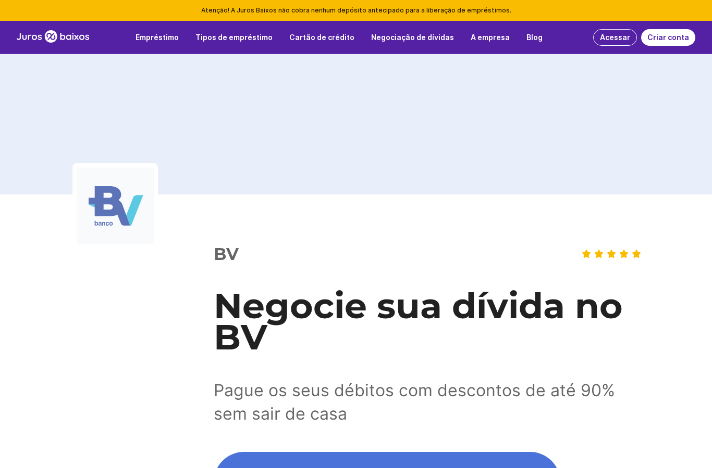
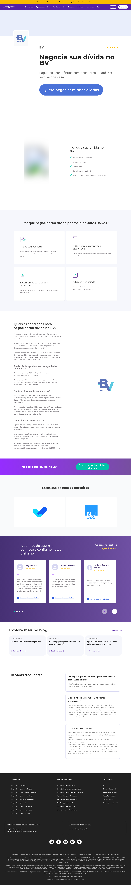

Sistema de Investigação de Marca e Identidade Online
https://jurosbaixos.com.br/negociar-dividas/bv
Prioridade: MEDIUM · Cenário: B_AMBIGUOUS_COMMUNICATION · Revisão humana: PENDING
A Juros Baixos opera como plataforma de crédito e renegociação de dívidas. Embora identifique claramente sua razão social, CNPJ e mencione atuar como correspondente bancário sob a Resolução CMN nº 4.935/2021, a página é estruturada como landing page temática ('Negocie sua dívida no BV') com o logotipo do banco em destaque e sem indicação dos canais de ouvidoria da instituição parceira, justificando revisão moderada. [Revisor: CONFIRM] A Juros Baixos (JB Agenciamento de Serviços e Negócios em Geral Ltda., CNPJ 28.812.324/0001-43) opera comercialmente como correspondente bancário e plataforma de crédito/renegociação de dívidas. A página em questão é uma landing page temática dedicada ao Banco BV ('Negocie sua dívida no BV') com aplicação do logotipo do banco (E-IMG-1, E-SHOT-VIEWPORT) para captação de clientes para serviço financeiro sensível (quitação/renegociação). Embora apresente declaração de correspondente bancário nos termos da Resolução CMN nº 4.935/2021 no rodapé (E-FTR), omite o canal de ouvidoria da instituição financeira parceira, justificando a manutenção de REVIEW_REQUIRED para conferência de conformidade regulatória e credenciamento ativo.


| Ref | Tipo | Local | Conteúdo |
|---|---|---|---|
| E-URL | domain | url | URL final: https://jurosbaixos.com.br/negociar-dividas/bv (domínio: jurosbaixos.com.br) |
| E-DISC-001 | text | search_index | Índice de busca (grounding): jurosbaixos.com.br — Apresenta razão social, CNPJ no rodapé e qualifica a sua atuação como plataforma de negociação/correspondente bancário parceiro | **Nome do Estabelecimento / Perfil:** Juros Baixos (Juros Baixos Promotora de Serviços Financeiros Ltda.) | **URL:** `https://jurosbaixos.com.br/dividas/negociar-divida-bv/` | **Uso da Marca e Hipótese:** Seção exclusiva para renegociação e quitação de contratos em atraso do Banco BV, além de simulação de novos créditos | Cita expressamente no rodapé o enquadramento na Resolução CMN nº 4.935/2021 como correspondente bancário do Banco BV S.A. (CNPJ 59.588.111/0001-03) | Informa CNPJ (10.891.675/0001-21), porém não possui vínculo de correspondente bancário credenciado nos termos da Resolução nº 4.935/2021, atuando como assessoria privada de deságio/revisão que utiliza a marca para captação de clientes inadimplentes | O site não exibe de forma clara e visível declaração de correspondente bancário da BV e omite dados regulamentares obrigatór |
| E-SHOT-VIEWPORT | screenshot | viewport | evidence/Cdd45877ea7/attempt-1/viewport.png (sha256 6bbd91a3478bf746…) |
| E-SHOT-FULL | screenshot | page | evidence/Cdd45877ea7/attempt-1/fullpage.png (sha256 07e400a46151fbd9…) |
| E-TITLE | title | head | Como negociar sua dívida no BV | Juros Baixos |
| E-META-1 | meta | head | description: Tem alguma pendência financeira com o BV que precisa resolver? Clique aqui e descubra como fazer isso no conforto da sua casa! |
| E-META-2 | meta | head | og:site_name: Juros Baixos |
| E-META-3 | meta | head | og:title: Como negociar sua dívida no BV |
| E-META-4 | meta | head | og:description: Tem alguma pendência financeira com o BV que precisa resolver? Clique aqui e descubra como fazer isso no conforto da sua casa! |
| E-CANONICAL | meta | head | https://jurosbaixos.com.br/negociar-dividas/bv |
| E-HEAD-1 | heading | page | Negocie sua dívida no BV |
| E-HEAD-2 | heading | page | Negocie sua dívida no BV |
| E-HEAD-3 | heading | page | Por que negociar sua dívida por meio da Juros Baixos? |
| E-HEAD-4 | heading | page | 1. Faça seu cadastro |
| E-HEAD-5 | heading | page | 2. Compare as propostas disponíveis |
| E-HEAD-6 | heading | page | 3. Comprove seus dados cadastrais |
| E-HEAD-7 | heading | page | 4. Dívida negociada |
| E-HEAD-8 | heading | page | Quais as condições para negociar sua dívida no BV? |
| E-HEAD-9 | heading | page | Quais dívidas podem ser renegociadas com o BV? |
| E-HEAD-10 | heading | page | Quais as formas de pagamento? |
| E-HEAD-11 | heading | page | Como funcionam os prazos? |
| E-HEAD-12 | heading | page | Negocie sua dívida no BV: |
| E-HEAD-13 | heading | page | Esses são os nossos parceiros |
| E-HEAD-14 | heading | page | A opinião de quem já conhece e confia no nosso trabalho: |
| E-HEAD-15 | heading | page | Explore mais no blog |
| E-HDR | text | header | Empréstimo Tipos de empréstimo Cartão de crédito Negociação de dívidas A empresa Blog Acessar Criar conta |
| E-FOLD | text | viewport (acima da dobra) | Atenção! A Juros Baixos não cobra nenhum depósito antecipado para a liberação de empréstimos. Empréstimo Tipos de empréstimo Cartão de crédito Negociação de dívidas A empresa Blog Acessar Criar conta Negocie sua dívida no BV Pague os seus débitos com descontos de até 90% sem sair de casa Quero negociar minhas dívidas |
| E-FTR | text | footer | Para você Empréstimo pessoal Empréstimo para negativado Empréstimo com garantia de celular Empréstimo para pagar dívidas Empréstimo saque aniversário FGTS Empréstimo para MEI Empréstimo para casamento Empréstimo para assalariado Empréstimo para autônomo Outras soluções Empréstimo consignado Empréstimo consignado privado Empréstimo com moto em garantia Refinanciamento de veículo Refinanciamento de imóvel Crédito do Trabalhador Empréstimo de 500 reais Empréstimo de 10 mil reais Links úteis Blog Sobre a Juros Baixos Seja nosso parceiro Trabalhe conosco Termos de uso Políticas de privacidade Fale com nosso time de atendimento sac@jurosbaixos.com.br Atendimento humano das 9h às 18h (dias úteis) Assessoria de imprensa redacao@jurosbaixos.com.br Juros Baixos é uma marca da JB – Agenciamento de Serviços e Negócios em Geral Ltda., CNPJ 28.812.324/0001-43 - Endereço: Av. Paulista, 91 - Bela Vista, São Paulo - SP, CEP 01311-000 A Juros Baixos não é uma instituição financeira e não concede crédito. Atua como correspondente bancário (Resolução CMN nº 4.935/2021) de: Banco BV S.A. (CNPJ 59.588.111/0001-03), Banco PAN S.A. (CNPJ 59.285.411/0001-13), Cobuccio S/A – Sociedade de Crédito, Financiamento e Investimentos, marca Ágil (CNPJ 36.947.229/0001-85), Crefaz Sociedade de Crédito ao Microempreendedor e à Empresa de Pequeno Porte S.A. (CNPJ 18.188.384/0001-83), JBCred S/A Sociedade de Crédito, Financiamento e Investimento (CNPJ 39.625.760/0001-20) e Omni S/A Crédito, Financiamento e Investimento (CNPJ 92.228.410/0001-02). Condições: as ofertas apresentadas são simulações. A aprovação do crédito, as taxas e as condições finais dependem da análise e da política de crédito de cada instituição. Os prazos de pagamento vão de 3 a 360 meses, conforme o produto e a instituição. As taxas de juros variam de 0,89% a 19,99% ao mês (11,22% a 790,72% ao ano). O Custo Efetivo Total (CET) varia de 11,69% a 860,43% ao ano. Antes da contratação, você verá a taxa de juros, as tarifas, o IOF e o CET |
| E-NAV | nav | header | Página principal Juros Baixos <https://jurosbaixos.com.br/> |
| E-CTA-1 | cta | header | Acessar |
| E-CTA-2 | cta | header | Criar conta |
| E-CTA-3 | cta | page | Quero negociar minhas dívidas <https://cp.jurosbaixos.com.br/criar-conta?product=debt_renegotiation> |
| E-CTA-4 | cta | page | Continuar lendo |
| E-CTA-5 | cta | page | Continuar lendo |
| E-CTA-6 | cta | page | Continuar lendo |
| E-CONTACT-1 | contact | page | Confira todas as avaliações <https://www.facebook.com/jurosbaixos/reviews/?ref=page_internal> |
| E-CONTACT-2 | contact | page | Confira todas as avaliações <https://www.facebook.com/jurosbaixos/reviews/?ref=page_internal> |
| E-CONTACT-3 | contact | page | Confira todas as avaliações <https://www.facebook.com/jurosbaixos/reviews/?ref=page_internal> |
| E-CONTACT-4 | contact | page | Confira todas as avaliações <https://www.facebook.com/jurosbaixos/reviews/?ref=page_internal> |
| E-CONTACT-5 | contact | footer | sac@jurosbaixos.com.br <mailto:sac@jurosbaixos.com.br> |
| E-CONTACT-6 | contact | footer | redacao@jurosbaixos.com.br <mailto:redacao@jurosbaixos.com.br> |
| E-CONTACT-7 | contact | footer | Juros Baixos Instagram <https://www.instagram.com/jurosbaixos/> |
| E-CONTACT-8 | contact | footer | Juros Baixos Facebook <https://www.facebook.com/jurosbaixos/> |
| E-IMG-1 | image | page (acima da dobra) | imagem alt='bv' src=https://jurosbaixos.com.br/assets/img/neg-dividas-logos/bank_logos/bv.svg (148x148, acima da dobra) |
| E-IMG-2 | image | page | imagem alt='bv' src=https://jurosbaixos.com.br/assets/img/neg-dividas-logos/bank_logos/bv.svg (240x240, abaixo da dobra) |
| E-IMG-3 | image | page | imagem alt='Acordo Certo' src=https://jurosbaixos.com.br/assets/img/neg-dividas-logos/negDividas/acordocerto.svg (280x207, abaixo da dobra) |
| E-IMG-4 | image | page | imagem alt='blu365' src=https://jurosbaixos.com.br/assets/img/neg-dividas-logos/negDividas/blu365.svg (280x293, abaixo da dobra) |
| E-TXT-001 | text | page | BV |
| E-TXT-002 | text | page | BV |
| E-TXT-003 | text | page | Negocie sua dívida no BV |
| E-TXT-004 | text | page | Precisamos de algumas informações suas para podermos consultar nossos parceiros. Aqui os seus dados estão seguros. |
| E-TXT-005 | text | page | Você precisará comprovar as informações cadastradas com nosso parceiro. |
| E-TXT-006 | text | page | Quais as condições para negociar sua dívida no BV? |
| E-TXT-007 | text | page | Já pensou em renegociar suas dívidas com o BV sem sair de casa de forma rápida, segura e fácil? Aqui no Juros Baixos isso é possível! |
| E-TXT-008 | text | page | Basta clicar em “Negocie a sua Dívida” e colocar os dados que são solicitados. Após isso, vai ter acesso as pendências financeiras que pode renegociar com o BV. |
| E-TXT-009 | text | page | Quais dívidas podem ser renegociadas com o BV? |
| E-TXT-010 | text | page | Por ser um processo 100% online, o BV não permite que renegocie qualquer tipo de dívida. |
| E-TXT-011 | text | page | Dessa forma, o BV permite a renegociação das seguintes dívidas: empréstimos, cartão de crédito, financiamento de veículos, financiamento estudantil e outros. |
| E-TXT-012 | text | page | No Juros Baixos, o pagamento deve ser feito única e exclusivamente por boleto. Desse modo, o parcelamento da sua dívida é feito por meio de boletos que devem ser pagos mensalmente. |
| E-TXT-013 | text | page | Todos esses boletos são emitidos pelo próprio BV e a plataforma do Juros Baixos apenas os organiza para que você tenha um acesso mais fácil e seguro. Assim, sempre que quiser consultá-los, basta acessar a sua conta no site. |
| E-TXT-014 | text | page | O prazo de compensação de um boleto é de até 3 dias úteis e esta é a única forma de pagamento disponível para quitar suas dívidas com o BV. |
| E-TXT-015 | text | page | Ainda assim, caso não haja uma baixa no pagamento em até 5 dias úteis, basta entrar em contato pelo e-mail atendimento@jurosbaixos.com.br ou telefone (11) 97520-5864. |
| E-TXT-016 | text | page | Negocie sua dívida no BV: |
| E-TXT-017 | text | page | Esses são os nossos parceiros |
| E-TXT-018 | text | page | Atendimento excelente, resolveram o meu problema de forma imediata e o dinheiro caiu na conta antes do prazo esperado. Super recomendo, todas as vezes que preciso, estão prontos para me ajudar. Nota 10!! |
| E-TXT-019 | text | page | Sim, super recomendo, me tirou do sufoco quando eu mais precisava, atendimento 100% |
| E-TXT-020 | text | page | Suas informações não são usadas para nada além da análise de perfil para a renegociação de dívidas. Temos privacidade total em nosso serviço! Apenas encaminhamos as informações para nossos parceiros, para que eles analisem seu perfil e encontrem a melhor proposta de negociação de dívida pra você, prezando sempre pela segurança dos seus dados. |
| E-TXT-021 | text | page | Seja nosso parceiro |
| E-TXT-022 | text | page | Fale com nosso time de atendimento |
| E-TXT-023 | text | page | sac@jurosbaixos.com.br |
| E-TXT-024 | text | page | Atendimento humano das 9h às 18h (dias úteis) |
| E-TXT-025 | text | page | Juros Baixos é uma marca da JB – Agenciamento de Serviços e Negócios em Geral Ltda., CNPJ 28.812.324/0001-43 - Endereço: Av. Paulista, 91 - Bela Vista, São Paulo - SP, CEP 01311-000 |
| E-TXT-026 | text | page | A Juros Baixos não é uma instituição financeira e não concede crédito. Atua como correspondente bancário (Resolução CMN nº 4.935/2021) de: Banco BV S.A. (CNPJ 59.588.111/0001-03), Banco PAN S.A. (CNPJ 59.285.411/0001-13), Cobuccio S/A – Sociedade de Crédito, Financiamento e Investimentos, marca Ágil (CNPJ 36.947.229/0001-85), Crefaz Sociedade de Crédito ao Microempreendedor e à Empresa de Pequeno |
| E-TXT-027 | text | page | Porte S.A. (CNPJ 18.188.384/0001-83), JBCred S/A Sociedade de Crédito, Financiamento e Investimento (CNPJ 39.625.760/0001-20) e Omni S/A Crédito, Financiamento e Investimento (CNPJ 92.228.410/0001-02). |
| E-TXT-028 | text | page | da contratação, você verá a taxa de juros, as tarifas, o IOF e o CET da operação. A simulação é gratuita; a Juros Baixos é remunerada pelas instituições parceiras. |
| E-TXT-029 | text | page | Atendimento: sac@jurosbaixos.com.br | dias úteis, das 9h às 18h. |
| E-NET-BLOCKED | network | collection | 1 requisição(ões) bloqueadas pela política: https://region.target_domain/a?t=96&type=push&d=N4IgLgngDgpiBcIoCcD2AzAlgGzgGiTS1wVAGMwB9VKMVAVzAXQENsBnGAXwMwBMEIAGwAtAOoBaABwBOGRIBKAFgDsIkASgBzBAEYCLdKRDZMAI0EB3GGYns%2BAawkA3AMwA6D7o2FUdMqjYggAWYG -> DNS resolution failed for region.target_domain: [Errno -2] Name or service not known |
| Dimensão | Sinal | Achado | Refs |
|---|---|---|---|
| VISUAL_IDENTITY | NEUTRAL | A identidade visual própria da Juros Baixos predomina no topo e na navegação, embora utilize elementos visuais da marca BV na seção temática de renegociação. | E-HDR E-SHOT-VIEWPORT E-SHOT-FULL |
| DECLARED_COMMERCIAL_IDENTITY | LEGITIMATE | Identificação explícita da titularidade empresarial no rodapé: JB – Agenciamento de Serviços e Negócios em Geral Ltda., CNPJ 28.812.324/0001-43. | E-FTR E-TXT-025 |
| CORRESPONDENT_TRANSPARENCY | CONFUSION | O rodapé cita a condição de correspondente bancário conforme Resolução CMN nº 4.935/2021 para o Banco BV e outros bancos, mas omite canais de ouvidoria do banco. | E-FTR E-TXT-026 |
| INSTITUTIONAL_LANGUAGE | NEUTRAL | O site esclarece que atua como intermediário e que os boletos são emitidos pela própria instituição financeira parceira. | E-TXT-013 E-TXT-026 |
| LOGO_USAGE | CONFUSION | Exibição do logotipo do BV em área de destaque na chamada principal de negociação de dívidas. | E-IMG-1 E-SHOT-VIEWPORT |
| SERVICE_JOURNEY | CONFUSION | Apresenta fluxo para renegociação de dívidas bancárias ('Negocie sua dívida no BV') com cadastro e redirecionamento de propostas. | E-CTA-3 E-TXT-008 E-TXT-012 |
| CONTACT_CHANNELS | LEGITIMATE | Disponibiliza canais próprios de contato e atendimento da Juros Baixos (e-mail, redes sociais e SAC próprio). | E-CONTACT-5 E-TXT-015 E-TXT-023 |
| CONSUMER_CONFUSION | CONFUSION | Landing page segmentada com o título 'Negocie sua dívida no BV' pode induzir o consumidor a crer que se trata de canal direto ou exclusivo de renegociação do banco. | E-TITLE E-HEAD-1 E-SHOT-VIEWPORT |
A Juros Baixos opera como plataforma de crédito e renegociação de dívidas. Embora identifique claramente sua razão social, CNPJ e mencione atuar como correspondente bancário sob a Resolução CMN nº 4.935/2021, a página é estruturada como landing page temática ('Negocie sua dívida no BV') com o logotipo do banco em destaque e sem indicação dos canais de ouvidoria da instituição parceira, justificando revisão moderada.
Um dos CNPJs da página consta do cadastro autorizado, mas há outros CNPJs (diretório, marketplace ou grupo): a titularidade da página não é inequívoca.
| Tipo | Valor | Ref | Contexto |
|---|---|---|---|
| domain | jurosbaixos.com.br | E-URL | |
| cnpj | 59.588.111/0001-03 | E-DISC-001 | ressamente no rodapé o enquadramento na Resolução CMN nº 4.935/2021 como correspondente bancário do Banco BV S.A. (CNPJ 59.588.111/0001-03 |
| cnpj | 10.891.675/0001-21 | E-DISC-001 | ) | Informa CNPJ (10.891.675/0001-21 |
| cnpj | 28.812.324/0001-43 | E-FTR | sa redacao@jurosbaixos.com.br Juros Baixos é uma marca da JB – Agenciamento de Serviços e Negócios em Geral Ltda., CNPJ 28.812.324/0001-43 |
| cnpj | 59.285.411/0001-13 | E-FTR | ), Banco PAN S.A. (CNPJ 59.285.411/0001-13 |
| cnpj | 36.947.229/0001-85 | E-FTR | ), Cobuccio S/A – Sociedade de Crédito, Financiamento e Investimentos, marca Ágil (CNPJ 36.947.229/0001-85 |
| cnpj | 18.188.384/0001-83 | E-FTR | ), Crefaz Sociedade de Crédito ao Microempreendedor e à Empresa de Pequeno Porte S.A. (CNPJ 18.188.384/0001-83 |
| cnpj | 39.625.760/0001-20 | E-FTR | ), JBCred S/A Sociedade de Crédito, Financiamento e Investimento (CNPJ 39.625.760/0001-20 |
| cnpj | 92.228.410/0001-02 | E-FTR | ) e Omni S/A Crédito, Financiamento e Investimento (CNPJ 92.228.410/0001-02 |
| legal_name | Juros Baixos Promotora de Serviços Financeiros Ltda | E-DISC-001 | |
| institution_name_displayed | Banco BV S.A | E-DISC-001 | |
| legal_name | Geral Ltda | E-FTR | |
| legal_name | Cobuccio S/A | E-FTR | |
| legal_name | Empresa de Pequeno Porte S.A | E-FTR | |
| legal_name | JBCred S/A | E-FTR | |
| legal_name | Omni S/A | E-FTR | |
| sac@jurosbaixos.com.br | E-FTR | ||
| redacao@jurosbaixos.com.br | E-FTR | ||
| social_profile | https://www.facebook.com/jurosbaixos/reviews/?ref=page_internal | E-CONTACT-1 | |
| social_profile | https://www.instagram.com/jurosbaixos/ | E-CONTACT-7 | |
| social_profile | https://www.facebook.com/jurosbaixos/ | E-CONTACT-8 | |
| atendimento@jurosbaixos.com.br | E-TXT-015 | ||
| legal_name | Porte S.A | E-TXT-027 | |
| trade_name | Juros Baixos | E-META-2 | |
| phone | (11) 97520-5864 | E-TXT-015 | |
| correspondent_declaration | não é uma instituição financeira | E-FTR | Para você Empréstimo pessoal Empréstimo para negativado Empréstimo com garantia de celular Empréstimo para pagar dívidas Empréstimo saque aniversário FGTS Empréstimo para MEI Empréstimo para casamento |
| correspondent_declaration | correspondente bancário | E-FTR | Para você Empréstimo pessoal Empréstimo para negativado Empréstimo com garantia de celular Empréstimo para pagar dívidas Empréstimo saque aniversário FGTS Empréstimo para MEI Empréstimo para casamento |
| correspondent_declaration | Resolução CMN nº 4.935 | E-FTR | Para você Empréstimo pessoal Empréstimo para negativado Empréstimo com garantia de celular Empréstimo para pagar dívidas Empréstimo saque aniversário FGTS Empréstimo para MEI Empréstimo para casamento |
Mapeamento indicativo para apoio à auditoria. Não constitui conclusão regulatória; a decisão definitiva pertence à auditoria.
Fonte: NORMATIVE
Art. 14. O contrato de correspondente deve estabelecer: [...] II - vedação à utilização, pelo contratado, de logomarca ou de outros atributos que sejam similares aos adotados pela instituição contratante em suas agências, postos de atendimento, sítio eletrônico na internet, aplicativo ou outras plataformas de comunicação em rede;
Hipótese: Uso de logomarca, uso excessivo/desproporcional ou de atributos similares aos adotados pela contratante em seus canais. Aplicável somente se confirmado o vínculo de correspondente.
Evidência observada: E-IMG-1 E-IMG-2 E-SHOT-VIEWPORT
Informação faltante:
Fonte: NORMATIVE
Art. 14. O contrato de correspondente deve estabelecer: [...] III - divulgação ao público, pelo contratado, de sua condição de prestador de serviços à instituição contratante, identificada pelo nome com que é conhecida no mercado, com descrição dos produtos e serviços oferecidos e canais de contato da instituição contratante, inclusive de sua ouvidoria, em local visível, em destaque e em formato legível, por meio de: a) sítio eletrônico do correspondente na internet, acessível na página inicial; b) aplicativo e outras plataformas de comunicação em rede do correspondente; [...]
Hipótese: Há declaração da condição de correspondente/prestador, mas outros elementos da página (CONSUMER_CONFUSION) podem contradizê-la ou reduzir seu efeito (destaque, legibilidade e identificação da contratante a verificar). Aplicável somente se confirmado o vínculo de correspondente.
Evidência observada: E-FTR E-HEAD-1 E-SHOT-VIEWPORT E-TITLE E-TXT-026
Informação faltante:
Fonte: NORMATIVE
Art. 3º O correspondente atua por conta e sob as diretrizes da instituição contratante, que assume inteira responsabilidade pelo atendimento prestado aos clientes e usuários por meio do contratado.
Hipótese: Atendimento ao público prestado por meio do contratado em condições que podem não seguir as diretrizes da contratante. Aplicável somente se confirmado o vínculo de correspondente.
Evidência observada: E-CTA-3 E-FOLD E-TXT-007 E-TXT-008 E-TXT-012 E-TXT-013
Informação faltante:
Limitações: requisitos contratuais/internos não fornecidos: mapeamento limitado ao texto normativo
Decisão: CONFIRM → REVIEW_REQUIRED / MEDIUM
A Juros Baixos (JB Agenciamento de Serviços e Negócios em Geral Ltda., CNPJ 28.812.324/0001-43) opera comercialmente como correspondente bancário e plataforma de crédito/renegociação de dívidas. A página em questão é uma landing page temática dedicada ao Banco BV ('Negocie sua dívida no BV') com aplicação do logotipo do banco (E-IMG-1, E-SHOT-VIEWPORT) para captação de clientes para serviço financeiro sensível (quitação/renegociação). Embora apresente declaração de correspondente bancário nos termos da Resolução CMN nº 4.935/2021 no rodapé (E-FTR), omite o canal de ouvidoria da instituição financeira parceira, justificando a manutenção de REVIEW_REQUIRED para conferência de conformidade regulatória e credenciamento ativo.
| Tema | Severidade | Questionamento | Refs |
|---|---|---|---|
| contradictory_evidence | LOW | Coexistem declaração de correspondente e indícios de confusão. | E-FTR E-TXT-026 |
| Fonte | Consulta / hipótese | URL original | Título / trecho |
|---|---|---|---|
| grounding | Objetivo: Páginas de terceiros ofertando serviços sensíveis com a marca (2ª via boleto, quitação, negociação, quitação de contrato).
Execute no Google Search as seguintes consultas (dorks):
- ("2ª via" OR "segunda via" OR "quitação" OR "quitar financiamento" OR "acordo") ("Banco BV" OR "bv financeira") (boleto OR contrato OR parcelas) -site:bv.com.br -site:bancobv.com.br -site:bvfinanceira.com.br -site:bvinvestimentos.com.br -site:napista.com.br -site:bvopen.com.br -site:meufinanciamentosolar.com.br -site:votorantim.com.br -site:vam.com.br -site:reclameaqui.com.br -site:jusbrasil.com.br -site:jus.br
- ("central de atendimento" OR "fale com" OR "SAC" OR "0800") ("Banco BV" OR "bv financeira") (boleto OR quitação OR negociação OR whatsapp) -site:bv.com.br -site:bancobv.com.br -site:bvfinanceira.com.br -site:bvinvestimentos.com.br -site:napista.com.br -site:bvopen.com.br -site:meufinanciamentosolar.com.br -site:votorantim.com.br -site:vam.com.br -site:reclameaqui.com.br -site:jusbrasil.com.br -site:jus.br
Liste de forma abrangente as páginas públicas encontradas (até 12 resultados distintos), informando para cada uma o nome do estabelecimento/perfil, a URL e como a marca é utilizada (destaque visual, título, feirão, simulador, redes sociais e se há ou não identificação clara de CNPJ e condição de correspondente bancário). H7-threat-intel:sensitive-services | https://jurosbaixos.com.br/negociar-dividas/bv | jurosbaixos.com.br Apresenta razão social, CNPJ no rodapé e qualifica a sua atuação como plataforma de negociação/correspondente bancário parceiro | **Nome do Estabelecimento / Perfil:** Juros Baixos (Juros Baixos Promotora de Serviços Financeiros Ltda.) | **URL:** `https://jurosbaixos.com.br/dividas/negociar-divida-bv/` | **Uso da Marca e Hipótese:** Seção exclusiva para renegociação e quitação de contratos em atraso do Banco BV, além de simulação de novos créditos | Cita expressamente no rodapé o enquadramento na Resolução CMN nº 4.935/2021 como correspondente bancário do Banco BV S.A. (CNPJ 59.588.111/0001-03) | Informa CNPJ (10.891.675/0001-21), porém não possui vínculo de correspondente bancário credenciado nos termos da Resolução nº 4.935/2021, atuando como assessoria privada de deságio/revisão que utiliza a marca para captação de clientes inadimplentes | O site não exibe de forma clara e visível declaração de correspondente bancário da BV e omite dados regulamentares obrigatórios da CMN 4.935/2021 |
Original: https://jurosbaixos.com.br/negociar-dividas/bv
Final: https://jurosbaixos.com.br/negociar-dividas/bv
| Artefato | Caminho | SHA-256 | Bytes |
|---|---|---|---|
| screenshot_viewport | evidence/Cdd45877ea7/attempt-1/viewport.png | 6bbd91a3478bf746f9760194dd0bf1b613f5095d713958e9bf458f16ddc0ce07 | 47906 |
| screenshot_full | evidence/Cdd45877ea7/attempt-1/fullpage.png | 07e400a46151fbd946c55b1b13c0b470f5736b638cb3c0e9d01c1c503c96a696 | 1114254 |
| html | evidence/Cdd45877ea7/attempt-1/page.html.txt | 6825e718b0b4104c1036cbaadb36502492afae3b790fdaa26abd98ab47dd7be1 | 97799 |
| text | evidence/Cdd45877ea7/attempt-1/text.txt | f5f6d6b0ccbd74a11c42774cc945887cd12e6f313e6baeb80ae5ff92cf1132a1 | 8022 |
| page_data | evidence/Cdd45877ea7/attempt-1/page.json | aa66ab51aa1c0ce6a19c47909d9b8f50d15cc6d06f88e6b1c39aeebe7730083f | 23787 |
| Quando | De | Para | Nota |
|---|---|---|---|
| 2026-11-25T18:12:10+00:00 | DISCOVERED | QUEUED | prioritised (score 1.0) |
| 2026-11-25T19:27:47+00:00 | QUEUED | COLLECTING | |
| 2026-11-25T19:27:52+00:00 | COLLECTING | COLLECTED | |
| 2026-11-25T19:27:52+00:00 | COLLECTED | ANALYZING | |
| 2026-11-25T19:28:15+00:00 | ANALYZING | REVIEWING | |
| 2026-11-25T19:28:28+00:00 | REVIEWING | COMPLETED |